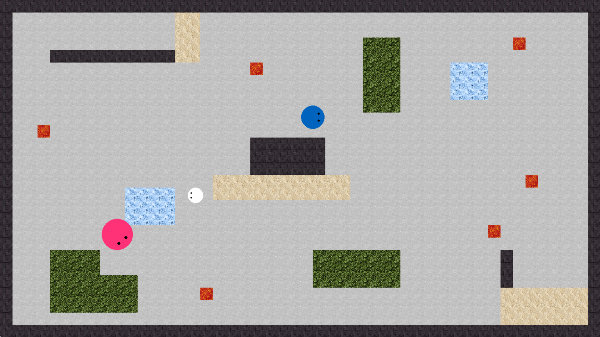
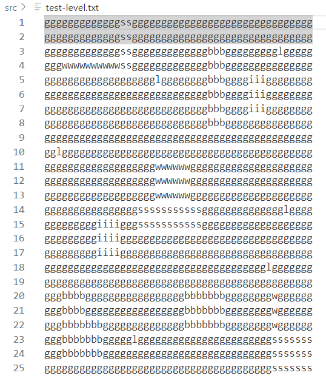
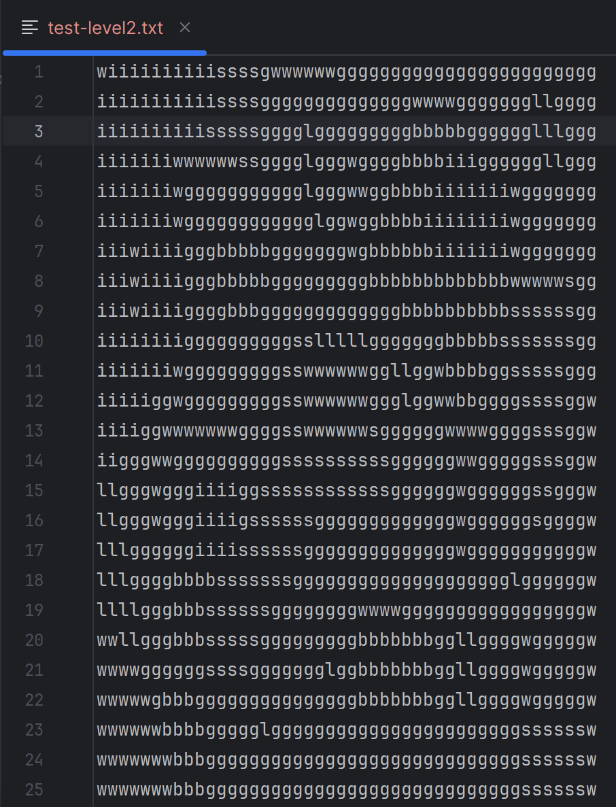
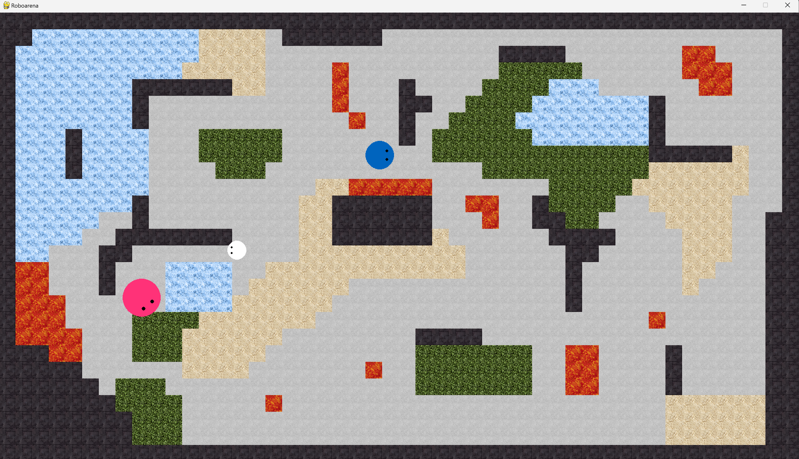

Damit unsere Arena ansprechender aussieht, nutzen wir für die verschiedenen Bereiche
statt den Farben nun Texturen. Wir haben frei verfügbare Texturen aus dem Internet verwendet und diese durch
ein online tool seamless gemacht, damit man sie beliebig
aneinander fügen kann ohne dass ein Übergang zu sehen ist.
Grundfläche der Arena:
Wände:
Sand:
Gebüsch:
Lava:
Eis:
(Nico)
Coding
Der Code wurde so angepasst, dass bei der Darstellung der Arena jetzt auch die Texturen
verwendet werden. Dies verursachte aber zu viel Rechenaufwand und dadurch ließ sich der Roboter
nicht mehr bewegen. Um das zu beheben, wurde eine neue Funktion erstellt, die die Arena nun einmal
zu Beginn initialisiert und abspeichert, so dass im Game-Loop jeweils nur noch das fertige Arenabild
dargestellt werden muss.

(Sarah)
Um später einfach neue Level hinzufügen zu können, kann man nun eine Arena einfach in einer txt-Datei
gestalten. Die Datei wird dann eingelesen und in eine Map umgewandelt. Daraus kann dann die Arena
dargestellt werden. Die Datei muss so viele Zeilen und Spalten haben wie die Arena groß ist,
in unserem Fall 46 Spalten und 25 Zeilen. Jedes Zeichen entspricht einem der verschiedenen Bereiche
(g = Grundfläche (ground), w = Wand (wall), l = Lava (lava), i = eis (ice), s = Sand (sand), b = Gebüsch (bush)).
So sieht dann z.B. die Datei zur oben gezeigten Arena aus:

Durch entsprechende Fehlermeldungen wird dem Nutzer geholfen, die korrekten Maße einzuhalten.
Wird keine Datei übergeben, wird eine default-Map verwendet.
(Sarah)
Coding Robot Movement
Es wurden verschiedene Funktionen gemacht in denen sich die Roboter auf verschiedene Arten bewegen können.
Eine Funktion bringt den gegebenen Roboter dazu in Kreis mit einem gewünschten Radius zu fahren.
Eine um den eigenen Roboter zu bewegen (Pfeiltasten für Richtung und a/d für Drehung).
Zusätzlich lässt eine Funktion den Roboter einen anderen verfolgen.
In den Video sieht man den blauen Roboter im Kreis fahren und der pinke und grüne Roboter verfolgen den
weißen Roboter, der durch die Tastatur kontrolliert wird.
Die Effekte der Umgebung (Wände, Sand, ...) müssen noch gecoded werden.
(Katja)
AI-tool
Zuerst wurde der Code zur Map-Erstellung mit kurzen, leicht verständlichen Kommentaren mithilfe von ChatGPT dokumentiert.
Auch der Code für die Bewegungslogik der Roboter wurde kommentiert – hier waren die Kommentare besonders hilfreich.
Das Parsen einer .txt-Datei zur Map-Erstellung wurde erfolgreich getestet. Die Testdatei war schnell erstellt und funktionierte einwandfrei.

Allerdings konnte die KI bei der konkreten Erstellung dieser Datei nicht sinnvoll unterstützen.
Die gezeichnete Test-Map, die per KI generiert wurde diente als Inspiration.

Um Flake8 besser an die automatische Formatierung mit Black anzupassen, wurde mit Hilfe von ChatGPT eine .flake8-Datei erstellt.
Diese dient als Konfigurationsdatei und legt unter anderem die maximale Zeilenlänge für GitHub-Aktionen fest.
Die gewählte Länge passt perfekt zur Formatierung von Black, sodass keine Konflikte mehr auftreten und alles automatisch formatiert werden kann.
(Walid)
Sonstiges (Absprachen, Probleme, Fragen etc.)
Unser Größenproblem aus dem voherigen Sprint wurde gelöst. Wir arbeiten mit einer festen Anzahl an tiles
(nötig, damit man die Arena in der text-Datei gestalten kann). Die Größe der tiles wird aber flexibel an die
Bildschirmgröße angepasst, sodass die Arena den kompletten Bildschirm überdeckt und man unseren gewünschten
full-screen Eindruck hat.
(Walid)